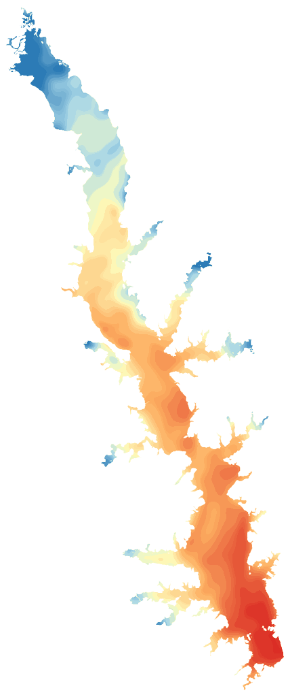

LakeScope › TX
Toledo Bend Reservoir today
Updated 2026-11-21 - Atlas Labs
Clear water, 64°F water, level steady, near normal, calm this morning.
Water level
167.50 ft
USGS gauge 08025350 - 2026-11-21
7-day trend: steady (-0.05 ft). Compared with normal for this date: -0.2 ft (same weeks, 2016-2025).
Water clarity and algae
Clear water Last clear view: about a week ago. 1 cloudy pass since.
Surface temperature
64°F
seen from space on 2026-11-19

Weather, next 3 days
| Day | Sky | High / low | Wind | Rain |
|---|---|---|---|---|
| Saturday | Mostly Sunny | 75 / 60°F | 5 mph SE | 1% |
| Sunday | Sunny then Slight Chance Rain Showers | 75 / 57°F | 5 mph SW | 15% |
| Monday | Partly Sunny | 65 / 49°F | 10 mph N | 5% |
Sunrise 06:48 - sunset 17:13 - Waxing gibbous. National Weather Service.
Get the LakeScope app: alerts and the 3-D view of Toledo Bend Reservoir